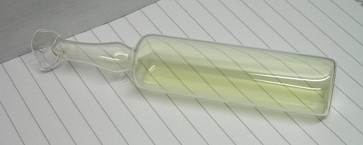
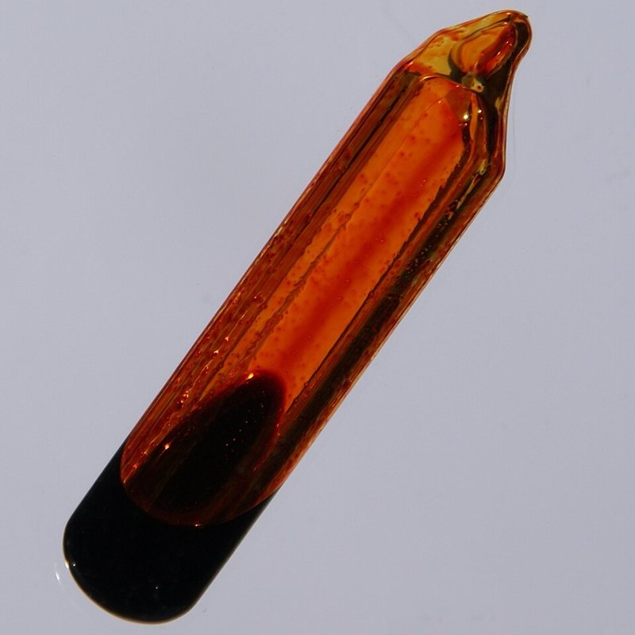
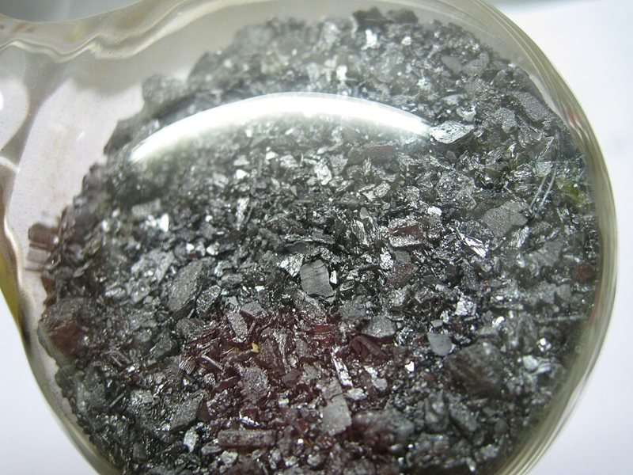
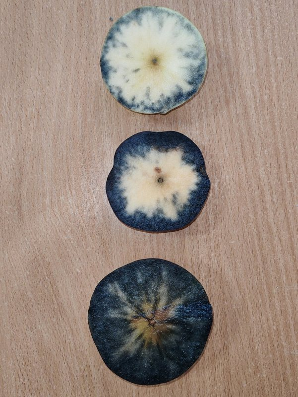
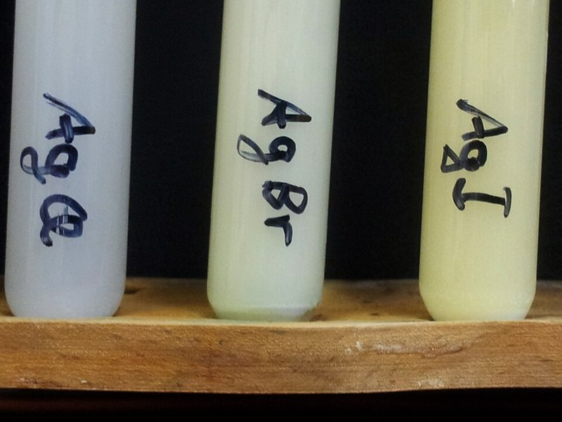
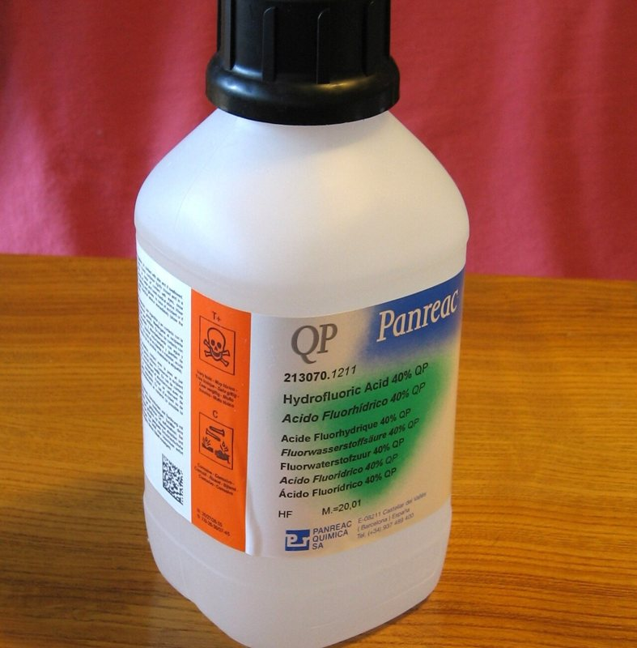

ハロゲン
ハロゲンの反応は、単体が酸化剤としてはたらく酸化還元と、ハロゲン化水素が出てくる酸塩基のどちらかで書ける。
反応の地図
つながる地図：硫黄（酸化数の範囲が同じ形。HCl と H₂S はどちらも一番下の段）・ナトリウム（NaCl の電気分解で Cl₂）・酸化数が上と下に分かれる反応（Cl₂＋H₂O）
単体
ハロゲンの原子は価電子を7個もち、電子を1個受け取って1価の陰イオンになりやすい。原子が小さいほど電子を強く引きつけるので、単体の酸化力は F2 ＞ Cl2 ＞ Br2 ＞ I2 の順になる。単体はどれも二原子分子で、分子量が大きいほど分子間力が強く、融点・沸点が高い。
| 単体 | 常温の状態 | 色 | 写真 |
|---|---|---|---|
| F2 | 気体 | 淡黄 | — |
| Cl2 | 気体 | 黄緑 |  |
| Br2 | 液体 | 赤褐 |  |
| I2 | 固体（昇華しやすい） | 黒紫 |  |
状態は分子間力から説明できるが、色は覚える。
塩素の製法
MnO2 が酸化剤、Cl− が還元剤。発生した気体は、水に通して HCl を、濃硫酸に通して水蒸気を除き、下方置換で集める。
式の出し方
両辺に 2Cl− を足すと化学反応式になる。
ClO− の Cl（＋1）と Cl− の Cl（−1）が、ともに 0 の Cl2 になる。加熱しなくても発生する。さらし粉 CaCl(ClO)·H2O でも同じ反応が起こる。
式の出し方
2つの半反応式を足して全体を2で割ると、イオン反応式になる。
工業的には、塩化ナトリウム水溶液を電気分解して陽極で得る（イオン交換膜法）。
塩素の反応
Cl の酸化数は 0 から −1（HCl）と ＋1（HClO）に分かれる。次亜塩素酸 HClO は強い酸化作用をもち、塩素水の殺菌・漂白作用のもとになる。
酸化力の強い単体が、それより弱い単体のイオンを酸化する（Cl2 と KBr、Br2 と KI も同じ形）。逆向き（I2 と KCl など）は反応しない。
式の出し方
I2 はデンプンと反応して青紫色になる。ヨウ化カリウムデンプン紙は、Cl2 や O3 のような酸化剤にふれると I− が酸化されて I2 ができ、青紫色になる。

ハロゲン化水素
HCl は強酸なので、酸の強さからはこの向きに進む理由が出てこない。揮発性の HCl が気体として系の外へ出ていくので右へ進む（揮発性の酸の遊離）。下方置換で集める。
HF は弱酸で電離しにくく、さらに揮発性で気体として出ていく。
NH3 が HCl から H+ を受け取る。NH4Cl の細かい結晶が白煙になるので、HCl や NH3 の検出に使う。
ハロゲン化銀
AgCl（白色）・AgBr（淡黄色）・AgI（黄色）は沈殿し、AgF は水に溶ける。AgCl や AgBr は光が当たると分解して銀が遊離する（感光性）。

AgCl はアンモニア水に溶けて、ジアンミン銀(Ⅰ)イオンになる。AgBr はわずかしか溶けず、AgI はほとんど溶けない。
塩素のオキソ酸
どれも O−H を1つもつ1価の酸で、Cl に結合した O が多いほど Cl の酸化数は大きく、酸として強い（HClO4 がいちばん強い）。O は電子を強く引きつけるので、O が多いほど O−H の H が H+ として離れやすくなる。
酸化マンガン(Ⅳ) を触媒にして加熱する。Cl が ＋5 から −1 に還元され、O が −2 から 0 に酸化される。
F・Br・I で塩素とちがう所
| F | Br・I | |
|---|---|---|
| 単体と水 | 水を酸化して O2 を出す（2F2 + 2H2O → 4HF + O2） | I2 は水に溶けにくい。ヨウ化カリウム水溶液には溶けて褐色になる |
| 水素化合物 | HF は弱酸。水素結合のため沸点がいちばん高い。ガラスを溶かす（SiO2 + 6HF → H2SiF6 + 2H2O）のでポリエチレンの容器に入れる | HBr・HI は強酸（HCl と同じ） |
| 銀の塩 | AgF は水に溶ける | AgBr 淡黄色、AgI 黄色の沈殿 |

よく出る疑問
Q1酸化マンガン(Ⅳ)と濃塩酸の反応で、4 mol の HCl のうち2 mol しか Cl₂ にならないのはなぜか。
HCl は還元剤（Cl− → Cl2）と、酸（H+ を出して MnO2 の O を H2O にする）の2つの役をしている。半反応式で e− をそろえると、還元剤として使われる Cl− は2個で、残りの2個の Cl− は MnCl2 に残る。
過去問で確かめる
新しい年度から順に並べている。正答率は大学入試センターの公表値（2024年以降）。問題のリンクは新しいタブで開く。
| 年度・試験 | 大問・問 | 問うたこと | 道具 | 正答率 | 問題 | 動画 |
|---|---|---|---|---|---|---|
| 2025共通テスト | 第3問 問4 a解答番号 16 | I⁻ の酸化に使う酸化剤・還元剤の記述の誤り | 酸化還元 | 59.2% | 問題 | 第3問の解説 |
| 2025共通テスト | 第3問 問4 b解答番号 17 | NaIO₃ と NaHSO₃ の反応の量的関係 | 酸化還元 | 48.2% | 問題 | 第3問の解説 |
| 2025共通テスト | 第3問 問4 c解答番号 18・19・20 | 地下水中の NaI の濃度を酸化還元の量から求める | 酸化還元 | 34.8% | 問題 | 第3問の解説 |
| 2024共通テスト | 第3問 問2解答番号 15 | アスタチンの性質を他のハロゲンから考える | 酸化還元覚える | 51.3% | 問題 | 第3問の解説 |
| 2024共通テスト | 第3問 問4 a解答番号 18 | NiS と CuCl₂ の反応で酸化される元素 | 酸化還元 | 62.4% | 問題 | 第3問の解説 |
| 2024共通テスト | 第3問 問4 b解答番号 19 | ニッケルの製錬で消費された Cl₂ の量 | 酸化還元 | 29.2% | 問題 | 第3問の解説 |
2010〜2023 年の設問（31問）
| 年度・試験 | 大問・問 | 問うたこと | 道具 | 正答率 | 問題 | 動画 |
|---|---|---|---|---|---|---|
| 2023共通テスト | 第2問 問2解答番号 10・11 | AgNO₃・NaCl 水溶液の電気分解の電極反応の記述 | 酸化還元 | 問題 | ||
| 2023共通テスト | 第3問 問1解答番号 16 | HF の性質（酸性・銀塩・沸点・酸化還元） | 覚える酸化還元 | 問題 | ||
| 2023共通テスト | 第5問 問2解答番号 33 | I₂ と Na₂S₂O₃ の滴定から気体中の H₂S の量を求める | 酸化還元 | 問題 | ||
| 2021共通テスト | 第2問 問1解答番号 7 | 光で起こる反応や現象（HCl生成・オゾン層・TiO₂）の記述 | 覚える | 問題 | ||
| 2020センター試験 | 第1問 問1解答番号 1 | F・Cl・Br・I の原子・単体の性質の傾向 | 覚える酸化還元 | 問題 | ||
| 2018センター試験 | 第3問 問2解答番号 2 | ハロゲンの単体・化合物の性質（F₂・HF・AgCl・HClO₂・I₃⁻） | 覚える酸化還元 | 問題 | ||
| 2018センター試験 | 第3問 問3解答番号 3 | NaCl と濃硫酸、FeS と希硫酸から出る気体の共通の性質 | 酸塩基覚える | 問題 | ||
| 2018センター試験 | 第3問 問4解答番号 4・5 | 性質の記述から Ca・Cl・Mg・N・Na・O の元素を特定する | 覚える | 問題 | ||
| 2017センター試験 | 第2問 問5解答番号 6 | 陽イオン交換膜法の電極の気体と膜を通るイオン | 酸化還元覚える | 問題 | ||
| 2017センター試験 | 第3問 問1解答番号 1・2 | 身近な無機物質（Pb・粘土・ガラス・Cu・次亜塩素酸塩・BaSO₄）の記述 | 覚える酸化還元 | 問題 | ||
| 2017センター試験 | 第3問 問2解答番号 3 | 遷移元素の触媒反応（鉄粉・四酸化三鉄・V₂O₅・白金・排ガス浄化） | 覚える酸化還元 | 問題 | ||
| 2017センター試験 | 第3問 問3解答番号 4 | 混合気体から不純物の気体を除く洗気の液体の適否 | 酸塩基覚える | 問題 | ||
| 2017センター試験 | 第3問 問5解答番号 6 | MnO₂ と濃塩酸から生じる Cl₂ の体積 | 酸化還元 | 問題 | ||
| 2016センター試験 | 第3問 問4解答番号 6 | 周期表上の元素の単体・酸化物・塩の性質（誤りを選ぶ） | 覚える酸塩基 | 問題 | ||
| 2014センター試験化学Ⅰ | 第1問 問2解答番号 3 | 周期表上の元素からつくる化合物の化学式 | 覚える | 問題 | ||
| 2014センター試験化学Ⅰ | 第2問 問4解答番号 12 | 下線の原子が還元されている反応を選ぶ | 酸化還元酸塩基 | 問題 | ||
| 2014センター試験化学Ⅰ | 第3問 問5解答番号 20 | 濃硫酸の性質（酸化作用・不揮発性など）の使い分け | 酸化還元覚える酸塩基 | 問題 | ||
| 2013センター試験化学Ⅰ | 第1問 問2解答番号 3 | 周期表と族ごとの性質の記述 | 覚える | 問題 | ||
| 2013センター試験化学Ⅰ | 第2問 問3解答番号 10 | 酸化剤としてはたらく物質の数を数える | 酸化還元 | 問題 | ||
| 2013センター試験化学Ⅰ | 第2問 問7解答番号 14 | イオン交換膜法の電流・時間と NaOH の量 | 酸化還元 | 問題 | ||
| 2013センター試験化学Ⅰ | 第3問 問1解答番号 15 | 工業的製法の原料と反応物の記述 | 覚える酸塩基 | 問題 | ||
| 2013センター試験化学Ⅰ | 第3問 問7 a解答番号 22 | Cl₂ の実験室的製法の試薬の組合せ | 酸化還元覚える | 問題 | ||
| 2013センター試験化学Ⅰ | 第3問 問7 b解答番号 23 | Cl₂ の捕集方法 | 覚える | 問題 | ||
| 2012センター試験化学Ⅰ | 第2問 問5解答番号 12 | 酸化還元反応でない反応を選ぶ | 酸化還元酸塩基 | 問題 | ||
| 2012センター試験化学Ⅰ | 第3問 問1解答番号 15 | 薬品の性質と保存法 | 覚える | 問題 | ||
| 2011センター試験化学Ⅰ | 第1問 問6解答番号 7 | 身のまわりの物質（炎色反応・合金・ソーダ法・ヨウ素・次亜塩素酸） | 覚える酸化還元 | 問題 | ||
| 2011センター試験化学Ⅰ | 第2問 問4解答番号 4 | 還元剤としてはたらく物質を選ぶ | 酸化還元 | 問題 | ||
| 2010センター試験化学Ⅰ | 第2問 問3 b解答番号 5 | 塩酸を加えると酸化還元で気体が出る物質 | 酸化還元酸塩基覚える | 問題 | ||
| 2010センター試験化学Ⅰ | 第3問 問3 a解答番号 3 | ハロゲン単体の性質と反応 | 覚える酸化還元 | 問題 | ||
| 2010センター試験化学Ⅰ | 第3問 問5解答番号 6 | 気体の発生法と、上方置換で捕集できる気体 | 覚える酸塩基酸化還元 | 問題 | ||
| 2010センター試験化学Ⅰ | 第3問 問6解答番号 7 | NaCl と濃硫酸から出る HCl を NaOH で吸収して中和 | 酸塩基 | 問題 |
次に読むページ：酸素・硫黄
写真の出典
- ヨウ素デンプン反応：Mezhenskyj、Wikimedia Commons「Iodine-starch test for apples.jpg」（CC BY-SA 4.0）
- 左から AgCl・AgBr・AgI の沈殿：Rrausch1974、Wikimedia Commons「Silberhalogenide.jpg」（CC BY-SA 3.0）
- フッ化水素酸はポリエチレンの容器に入れる：User:Dorgan、Wikimedia Commons「Hydrogen fluoride.JPG」（CC BY-SA 3.0）
- 塩素（黄緑色の気体）：W. Oelen、Wikimedia Commons「Chlorine ampoule.jpg」（CC BY-SA 3.0）
- 臭素（赤褐色の液体）：Jurii、Wikimedia Commons「Bromine-ampoule.jpg」（CC BY 3.0）
- ヨウ素（黒紫色の固体）：Dnn87、Wikimedia Commons「Iodine crystals, 99.9% purity.jpg」（CC BY 3.0）